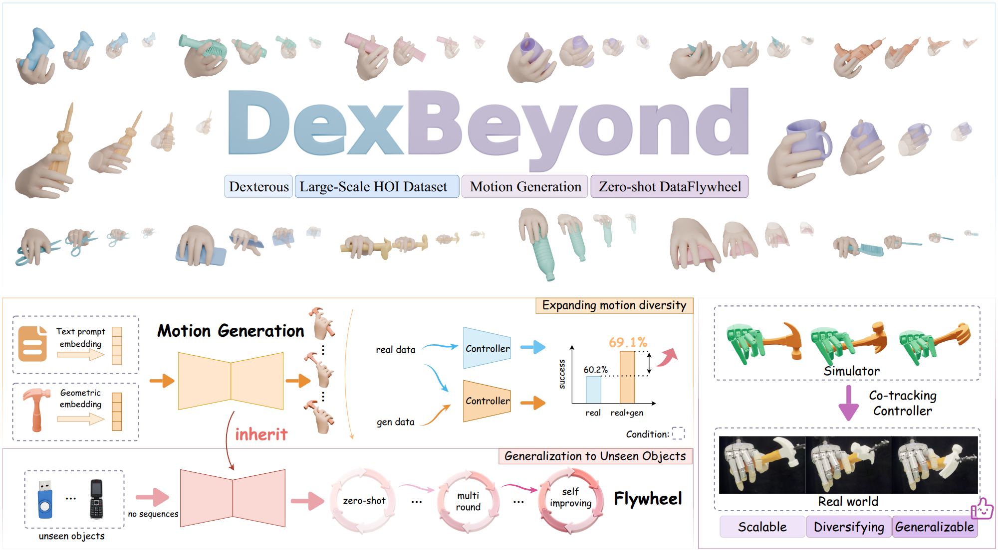
DexBeyond: Scaling Dexterous Manipulation Through Iterative Hand-Object Interaction Generation
2026 · arXiv submission pending moderation
Embodied intelligence · Computer vision
I research embodied intelligence and computer vision, including dexterous manipulation, image and video editing, and video generation.
I am a second-year PhD student in the “Tong Program” (通计划), on a combined master’s–PhD track jointly hosted by Xidian University’s Key Laboratory of Intelligent Perception and Image Understanding, Ministry of Education (IPIU Lab), and the Beijing Institute for General Artificial Intelligence (BIGAI). I expect to graduate in December 2028.
At Xidian, I am supervised by Prof. Licheng Jiao and Prof. Fang Liu. My collaborating advisors at BIGAI are Qing Li and Baoxiong Jia.

2026 · arXiv submission pending moderation
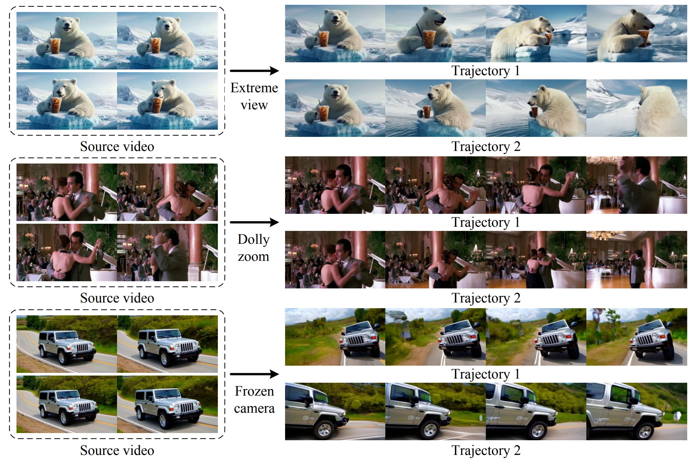
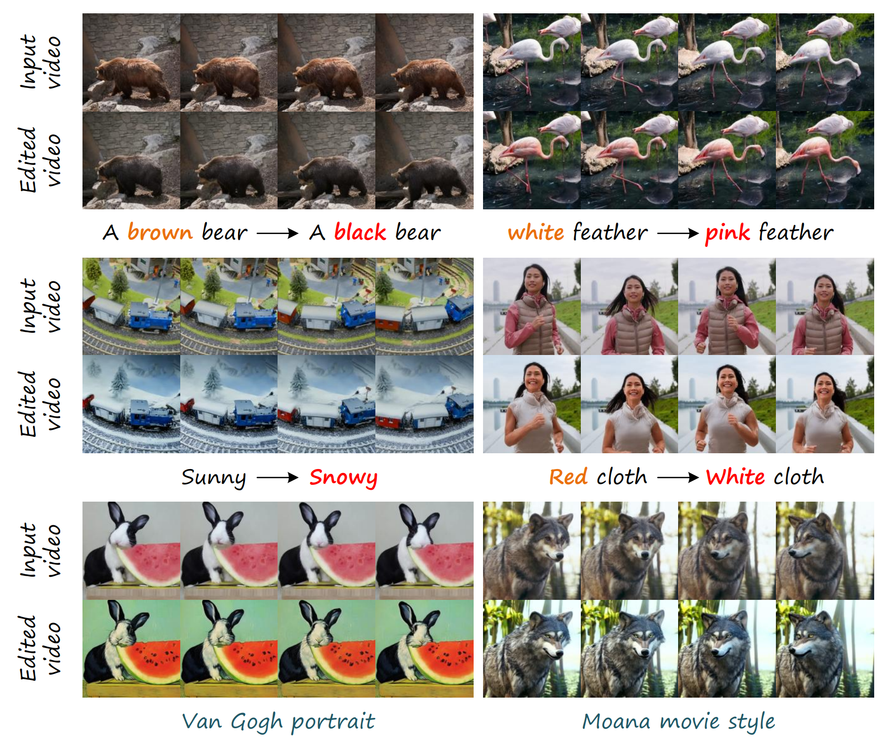
Pattern Recognition, 2026
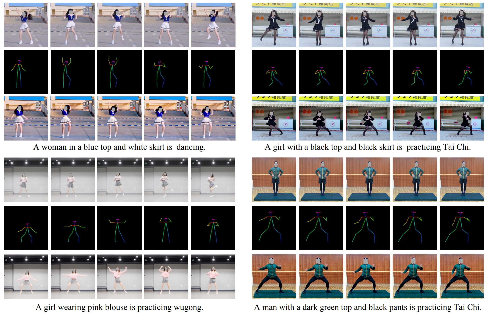
IEEE Transactions on Multimedia, 2026
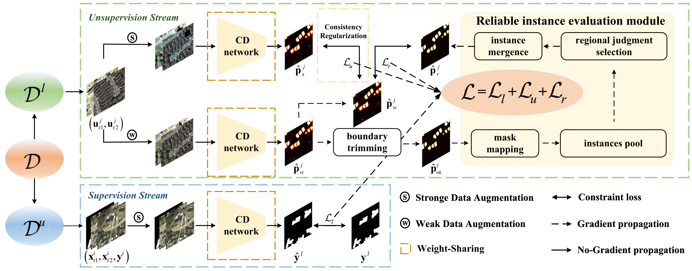
IEEE Transactions on Geoscience and Remote Sensing (TGRS), 2024
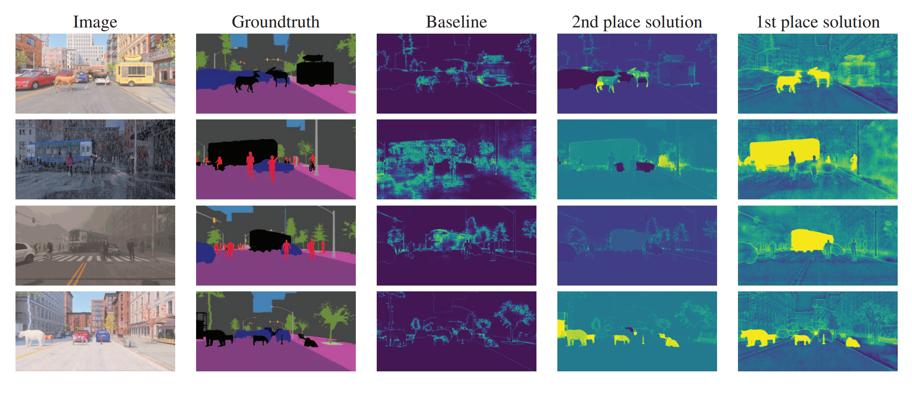
ICCV Workshops, 2023 · pp. 4618–4628
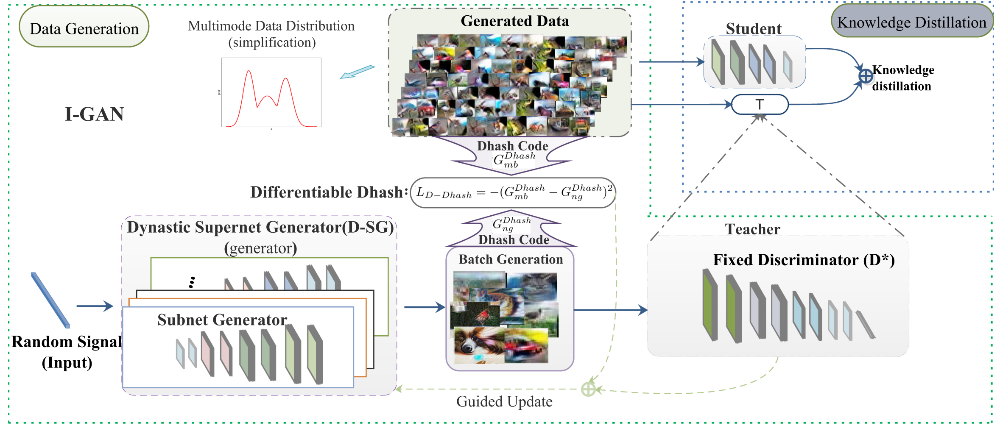
PhD in Computer Science and Technology · Joint training, Tong Program
Supervisors: Prof. Fang Liu and Baoxiong Jia
March 2025 – December 2028 (expected)
Master’s studies in Computer Science and Technology · School of Artificial Intelligence
Supervisor: Prof. Licheng Jiao
September 2022 – June 2025
Bachelor’s degree in Management · Electronic Commerce, School of Economics and Management
September 2018 – June 2022
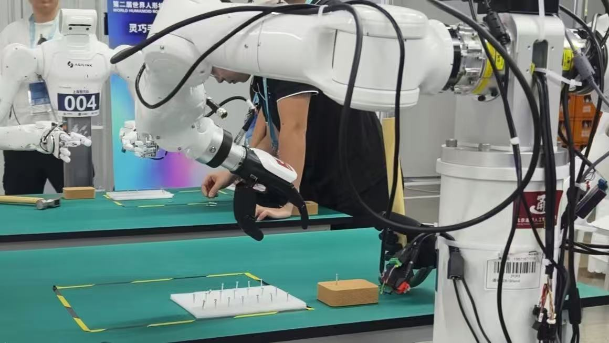
Dexterous manipulation: nail fastening and precision powder weighing.
Result: Advanced to the finals.
My contributions: Algorithm design, testing, and deployment for both nail fastening and powder weighing.
Finals: A robotic hand malfunction occurred during the finals.
AI for mural restoration and cultural digital asset generation.
Shaanxi “AI+” Key Product ↗ · CCTV · 开门大吉 ↗
A cultural heritage and tourism platform supporting mural damage detection and intelligent restoration, cultural and tourism knowledge Q&A and smart guided tours, artifact line drawings and professional drafting, and cultural digital asset generation.
My contributions: Intelligent restoration and completion of damaged murals, along with character motion transfer and generation.
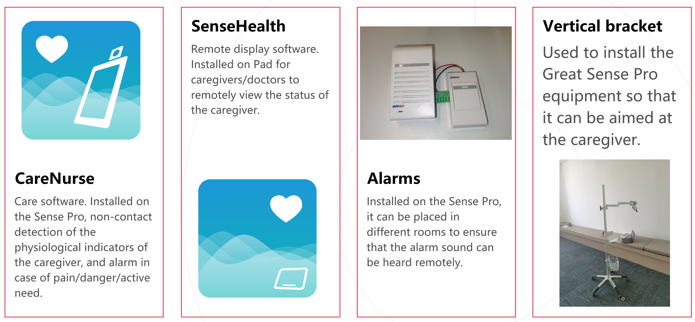
2021 SenseTime Future Star Award · Only 20 recipients each year.
Contactless health monitoring and intelligent assistive care.
Helped build an intelligent nursing system for patients with limited mobility or speech. The system supports contactless monitoring of physiological indicators, abnormality alerts, expression-based calls for help, and remote care.
My contributions: Built the project architecture and integrated physiological monitoring, anomaly detection, and face recognition algorithms; contributed to data collection, customer-specific features, deployment, and maintenance.
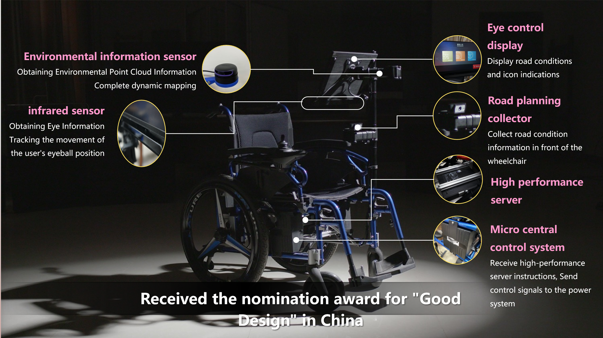
Project lead · 2022–2023
An assistive wheelchair combining gaze-based control with LiDAR-based indoor autonomous navigation. Eye movements also let users select voice messages and music.
Led the technical roadmap and third-generation upgrade, added autonomous navigation, and migrated the control software from C# to Python on Ubuntu.
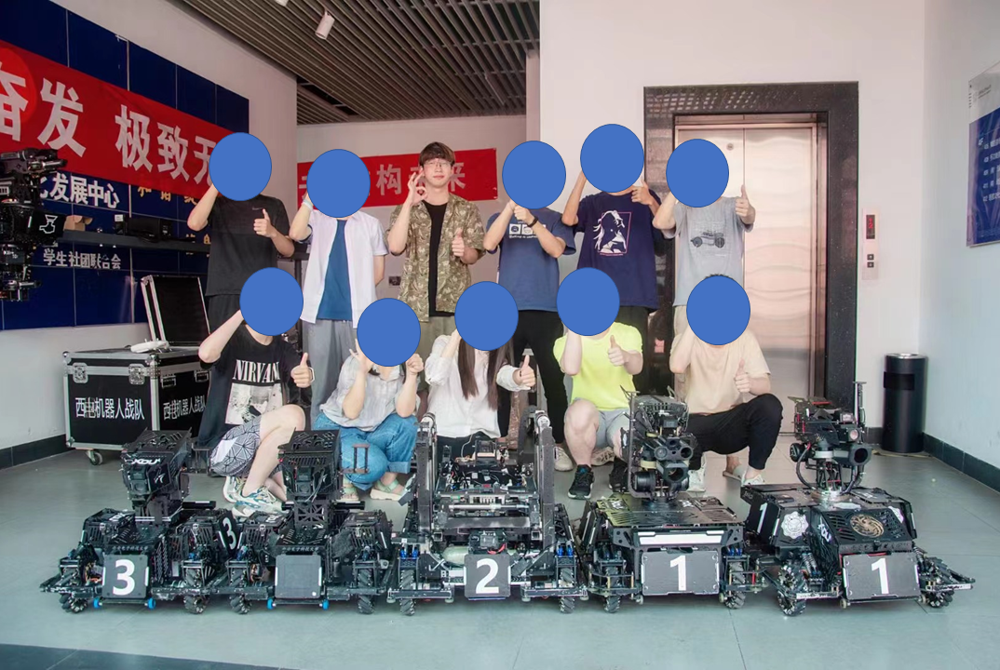
Drone team deputy lead · Visual algorithms
A student robotics project involving autonomous visual recognition, ground-target detection, and multi-sensor localization for competition drones.
Developed the visual algorithms and drone technical roadmap, connected perception with electronic control, and coordinated team planning and project milestones.
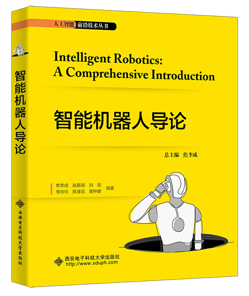
My contribution: Wrote the chapter “Autonomous Intelligent Vehicles” (自动驾驶智能汽车).